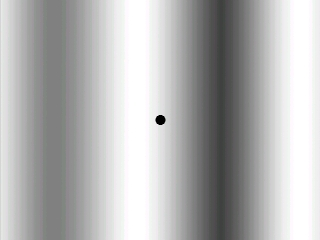
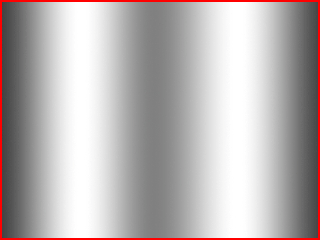
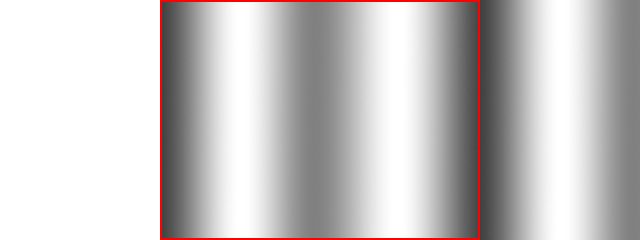

在某些情况下，制作一张巨幅的背景图会很浪费资源或者说很不实用。这种情况下，“滚动背景”就派上用场了。无论是你有一个具有无限长度的关卡，或者是你懒得去制作一整张地图，滚动背景对你来说会很有用。本课将教你制作一个具有无限长度的平滑滚动的背景。
你可以看到这样一个具有滚动背景的窗口：
实际上，这背后是这样的：
这个程序循环地进行这样的操作，来让人产生无限长背景的幻觉。这是滚动背景的基本前提。

虽然你可能需要一个更平滑的滚动背景，但这看上去已经是一个无限长的背景。实际上，这背后是这样的：

背景图片被重复地blit，并且每帧结束后，它会移动一小段距离。当背景移动到末端时，它的坐标被重置为初始值。这个程序循环地进行这样的操作，来让人产生无限长背景的幻觉。这是滚动背景的基本前提。
//背景图片的坐标
int bgX = 0, bgY = 0;
由于背景是在移动的，所以我们必须用变量来保存它的坐标。
一般地，在一个单独的类中处理滚动背景会更好，但是...呃...在main函数里面直接操作能让我少打点字。
一般地，在一个单独的类中处理滚动背景会更好，但是...呃...在main函数里面直接操作能让我少打点字。
//当用户还没有请求退出时
while( quit == false )
{
//启动帧计时器
fps.start();
//当有事件需要处理
while( SDL_PollEvent( &event ) )
{
//如果用户单击了窗口右上角的关闭按钮
if( event.type == SDL_QUIT )
{
//退出程序
quit = true;
}
}
//滚动背景
bgX -= 2;
//如果背景移到了末端
if( bgX <= -background->w )
{
//将坐标重置为0
bgX = 0;
}
当我们在主循环中做完事件处理后，我们将背景向左移动一小段距离。接着，我们检查背景是否移到了末端。如果是的话，我们通过将背景移回初始位置来重新开始这样的滚动动画。
//显示背景
apply_surface( bgX, bgY, background, screen );
apply_surface( bgX + background->w, bgY, background, screen );
//显示小黑点
apply_surface( 310, 230, dot, screen );
//更新窗口
if( SDL_Flip( screen ) == -1 )
{
return 1;
}
//捕获帧率
if( fps.get_ticks() < 1000 / FRAMES_PER_SECOND )
{
SDL_Delay( ( 1000 / FRAMES_PER_SECOND ) - fps.get_ticks() );
}
}
下面，我们把背景图先根据其本身的坐标blit一次，然后再在它右边紧邻的位置blit一遍，这样就能给我们一个无限长背景的幻觉。
接下来，我们让小黑点显示出来，并更新窗口，捕获帧率，以及所有其他的好东西。
接下来，我们让小黑点显示出来，并更新窗口，捕获帧率，以及所有其他的好东西。
译者注：我始终想不出来 “and all that good stuff” 到底该怎么翻译，“以及所有其他的好东西”，总感觉怪怪的。